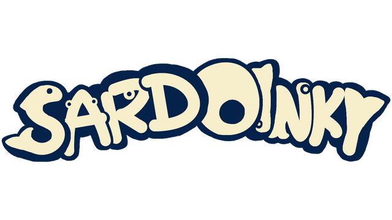

تعريب مجتمعي كامل للعبة
افتح علب السردين، واكتشف الأسماك النادرة، وبِعها، ورقِّ طاولتك. الآن بالعربية: القوائم والإعدادات وطاولة العمل والحوار والمتجر والترقيات والمجموعة والأسماك والإنجازات.
لقطات من اللعبة بالعربي
التعريب
ما الذي عُرّب؟
- 1346 نصاً في سبعة أقسام
- القوائم والإعدادات والحوار والمتجر
- الترقيات والمجموعة والأسماك والإنجازات
التثبيت
- أغلق اللعبة، ثم في Steam: إدارة ← استعراض الملفات المحلية
- ضع ملف التعريب بجانب
sardoinky.exeوشغّله، وقد يطلب ويندوز إذن الكتابة في مجلد اللعبة - شغّل اللعبة واختر العربية من الإعدادات ← اللغة
الإزالة
- أغلق اللعبة
- في Steam: خصائص ← الملفات المثبّتة ← التحقق من سلامة ملفات اللعبة
- يعيد Steam اللعبة كما كانت
تحقق من الملف
بصمة ملف التعريب SHA-256:
4efb322804799e3a7d621cb9c3a5b28c411a68d38da31ec81a58eb4b0082234e
قبل أن تبدأ
تعريب مجتمعي غير رسمي لنسخة Steam 1.0.7. بعض الكتابات داخل الصور والشعارات ما زالت بالإنكليزية. إذا حدّث Steam اللعبة فقد يعود ملفها الأصلي، فأعد تشغيل ملف التعريب. اختُبر على Windows 11 25H2، وفيه مسار توافق مع ويندوز 10 من الإصدار 1703 لم يُختبر بعد.